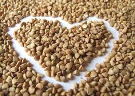

Гречана крупа. Вміст мікроелементів і вітамінів в гречці. Користь і вживання гречки
Гречана крупа. Умови вирощування
Гречка - цінний харчовий продукт, вона містить найважливіші мікроелементи і є дійсно кращою дієтичної крупою: багата клітковиною, має в складі трудноусваиваемые вуглеводи, за рахунок чого гречка не занадто сильно підвищує рівень цукру в крові. Цим і обумовлено її застосування як основи дієтичного харчування при діабеті.
Гречка родом з Алтаю, вона досить складна в вирощуванні, але у нас, в Росії і на Україні, стала традиційним продуктом харчування. Недарма західні народи називали слов'ян «гречкосіями». Більше двох тисяч років тому наші предки вирощували гречку, а «щі да каша - їжа наша» - це як раз про гречану кашу. Назву свою гречка отримала тому, що на Русі найбільше її сіяли грецькі монахи.
Досі гречку вважають екологічно чистим продуктом і не без підстав: гречка невибаглива до грунтів, не боїться бур'янів - отже, немає необхідності при її вирощуванні застосовувати пестициди, крім того, для вирощування гречки не застосовують добрив. Не менш важливий і той факт, що гречку ніхто не піддавав генетичному модифікуванню (швидше за все, тому, що генетичні модифікатори до неї ще не добралися).
Вміст мікроелементів та вітамінів у гречаній крупі та інших крупах
В першу чергу гречка багата мінеральними речовинами, з яких найважливіші йод, нікель, залізо, фосфор, мідь, кобальт і ін, в гречці є вітаміни групи В (В1, В2, В6, В9), вітаміни Е і РР. Вміст цих вітамінів і мінеральних компонентів в 1,5-3 рази більше, ніж в інших крупах, але не тільки ці речовини роблять гречку незамінним дієтичним продуктом. Велика частина жирів (2,5 м з 3,3 м) - поліненасичені, рослинного походження і тому сприятливо впливають на обмін жирів і знижують рівень холестерину в організмі. Сприяючи прискоренню обміну речовин, гречка дозволяє прискорити процес зниження ваги.
Гречка багата білками, клітковиною і корисними вуглеводами, які не включаються в процес жирообразования. Особливість білків, які входять до складу гречки, в тому, що вони містять велику кількість незамінних амінокислот. Це робить гречку цінним харчовим продуктом, який по білковому складом порівнюють з м'ясом. За вмістом незамінних амінокислот гречка порівнянна з бобовими культурами: бобами, горохом, квасолею.
| Харчова цінність | гречана | рисова | пшоняна | вівсяна |
|---|---|---|---|---|
| калорійність | 310,0 ккал | 304,8 ккал | 344,1 ккал | 335,5 ккал |
| вода | 14,0 г | 14,0 г | 12,0 г | 14,0 г |
| білки | 12,6 г | 7,0 г | 11,0 г | 16,0 г |
| жири | 3,3 г | 1,0 г | 6,1 г | 1,0 г |
| вуглеводи | 62,1 г | 71,4 м | 65,4 г | 70,0 г |
| Разом |
Показники енергетичної цінності різних видів гречки:
- 290 ккал - продовольче зерно;
- 308 ккал - зелена крупа;
- 313 ккал - ядриця.
Користь і вживання гречаної крупи
Незважаючи на свою досить високу калорійність (310 ккал/100 г), гречка незамінна для зниження ваги хоча б тому, що сприяє підвищенню рівня основного обміну, а цей ефект дозволяє спалити набагато більше калорій, ніж ті, які ми отримуємо в гречці. Високий вміст клітковини і більш низьке - легкозасвоюваних вуглеводів призводить до того, що лише незначна кількість вуглеводів підвищує рівень цукру в крові і таким чином включається в жировий обмін.
В Росії і на Україні гречка стала основою харчування. Крім повсякденного харчування та громадського харчування (навіть в зубожілому ресторані завжди є гарнір з гречаної каші) гречка активно використовується в якості незамінного продукту лікувального і дієтичного харчування.
Атеросклероз, хвороби печінки (гепатити, гепатози, цирози), гіпертонія самого різного походження (крім ниркової), набряки, підвищення рівня холестерину в крові, розлади імунної системи, запори, гастрит і виразкова хвороба - ось неповний перелік хвороб, при яких рекомендують вживати в їжу страви з гречки. Хвороби цивілізації - зниження імунітету, отруєння промисловими токсинами, хронічні стреси, синдром хронічної втоми - стали тією причиною, по якій дієтологи рекомендують активно вводити в раціон яйця і страви з неї. Багато дослідників вказують на користь гречки при остеоартрозі (ураженні суглобів), відзначають її детоксикуючий, зміцнюючу дію на стінки капілярів і властивість гречки підвищувати рівень допаміну (тобто допомагає долати депресію, особливо у чоловіків).